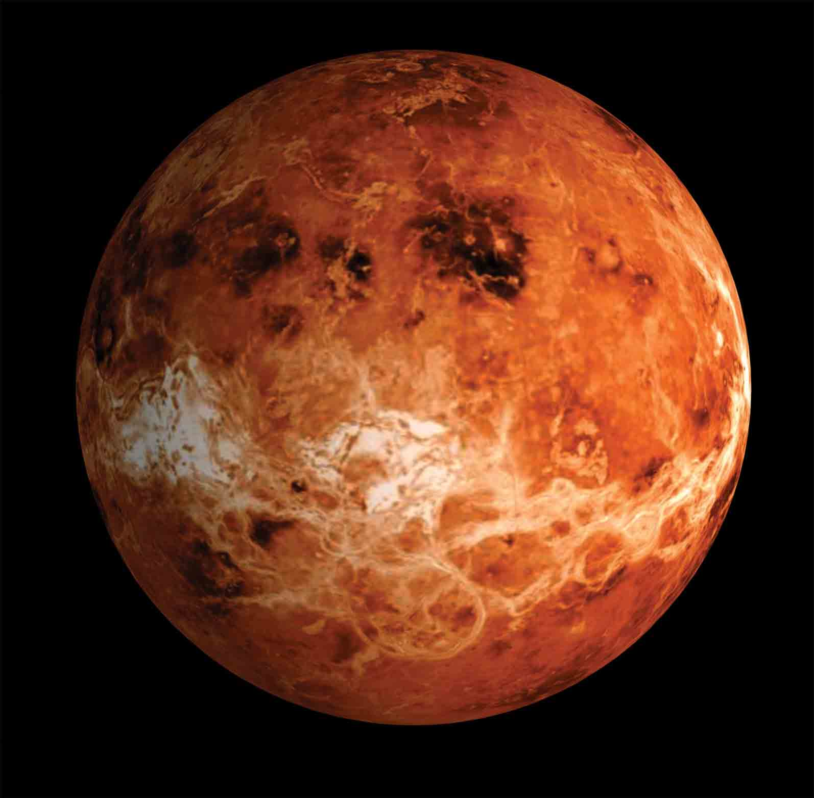

When Worlds Collide
Wisdom-Square › Our True History › When Worlds CollideWhy doesn’t the ancient Egyptian timeline agree with the story the Hebrew story from the Exodus?
Dr. Immanuel Velikovksy spent his life’s work coming up with a logical answer for this. He found that he was able to solve this problem if he adjusted the chronology of ancient Egypt by 500 years. Everything would start to align with the Exodus then. The problem is that the histories of Greece, Assyria, Babylon, and Judea were all dated from the ancient records of Egypt. This caused Velikovsky’s work to become highly controversial, especially his theory explaining why ancient Egyptian records didn’t account for the 500 missing years. This was to the point that the publishing company (Macmillan) of his first book (Worlds in Collision) was threatened to be boycotted by astronomers everywhere. The publisher was forced to withdraw the book from circulation and any unsold copies were burned.
Velikovsky’s reasoning for the missing 500 years was due to a global catastrophe incident. More specifically, he concluded that the planet Venus was a comet that collided with Earth and Mars. To be more accurate, parts of that comet collided with both planets… but the major damage come from the large mass passing by too close to both planets. Because it passed by so close, the electromagnetic field of our planet was disrupted, causing the rotation of the earth to slow and the axis to shift slightly. This caused great hurricanes, tidal waves, volcanic eruptions, and climate changes that all occurred very rapidly. This is in contrast to today’s accepted theory of uniformitarianism. This theory proposes that the earth only experienced gradual and natural changes over time. However there are many pieces of evidence across the world that proves Velikovsky’s theory to be correct.
|
 |
There are many references from cultures across the world and even on remote islands that account a tale of significance towards mythical figures that are supposed to represent Venus and Mars. But more compelling is nature’s evidence. All over the coast of Alaska there are great heaps of smashed bones of different extinct animals mixed together with uprooted trees and the occasional flint spear-head. Four layers of volcanic ash can be found in these remains of splintered trees and dismembered bodies. In the Polar Regions of Siberia and the Arctic islands there are hills of broken wood piled hundreds of feet high, and beyond them hills of mammoth bones cemented together by frozen sand. On one island the bones of these animals were found with fossilized trees, leaves, and cones. At the time the mammoth lived in Siberia, abundant vegetation must have existed. Antarctica is known to have seams of coil at a latitude of 85 degrees, and for this to have formed the Polar Regions must have had great forests in the past. In France there is a 1,400 foot hill in France filled of the remains of mammoths, reindeer, horses and other animals. America has beds of fossil bones contain 100 bones per square foot, deposited in sand. Some of which are over 200 feet high, and contain mixtures of extinct and non-extinct animal remains. The hills of the Himalayas and the Burma contain similar mounds of bones. In China, among these fractured bones are the skeletons of seven humans. European, Melanesian, and Eskimo types were found lying together.
The conventional theory of slow and uniform geological processes cannon explain these deposits. Velikovsky suggests a giant tidal wave engulfed the world, which picked up and carried plants and animals over great distances, depositing them into intermingled grave sites. In the highest parts of the Andes Mountains there are high water surf marks lined with un-decayed seashells. There are many ruins surrounded by terraces for cultivation on the dry west side of the Andes. The ocean floor around the globe displays signs of lava flows and volcanic ash. The bottom of seas show that the Earth has been showered with meteorites on a very large scale, leaving clay deposits rich in nickel, radium, and iron. Also, when the earth’s axis shifted when the magnetic field was affected by Venus, magnetic eddy currents formed in the atmosphere. These generated great heat and melted rocks on the surface of the earth. As the rocks cooled, the magnetic polarity of these rocks became different from the surround strata. All over the world, similar rock formations are found with their magnetic polarization reversed, which is much stronger than the Earth’s magnetic field alone could have accounted for. The inertia of air and water caused hurricanes and tidal waves, which caused stress on the planet releasing massive volcanic eruptions, sending up clouds of volcanic ash which darkened the sky during the time of the Exodus.
Velikovsky theorized that Venus came from Jupiter. Additional proof can be found studying Venus. It behaves differently from the rest of the planets. Its rotational spin is backwards from other planets and a year is shorter than a day on Venus. Its surface temperature is much hotter than other planets and its atmosphere is much denser than what astronomer believed. All of this was predicted by Velikovsky and was later proven true. In fact, today as we learn more about our solar system, some scientists have realized that although his theories conflict with accepted ideas, they don’t conflict with fact and evidence.
Wisdom-Square › Our True History › When Worlds Collide